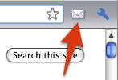
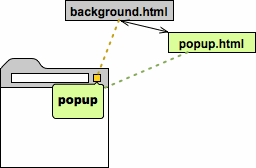

完成了入门例子后，继续学习入门例子推荐的后续文章，开始迈向拓展大师的第一步。
总览
一旦完成本页面和入门指南，你就可以开始写属于你的拓展了。
基础
拓展是一个文件的压缩包，由 HTML，JavaScript，图片，和其它你需要的文件组成，对 Chrome 浏览器的功能进行拓展。拓展实质上是一个网页，它们可以使用所有浏览器对网页提供的 APIs，从 XMLHttpRequest 到 JSON 到 HTML5。
拓展可以使用 content scripts 或 跨域 XMLHttpRequests 与 web 页面或服务器交互。拓展也可以以编程方式与浏览器功能交互例如书签和标签。
拓展的界面
许多拓展 (非 Chrome 应用程序) 会添加界面到 Google Chrome 中，以 browser actions 方式或 page actions 方式。每个拓展最多可以有一个 browser action 或 page action。当拓展对大部分页面有用时选择 browser action，当拓展对某些页面显示，不显示，依赖时选择 page action。
|  |  |
|
|---|---|---|
| Google Mail Checker 拓展使用 browser action (图标在工具栏中) | Mappy 拓展使用 page action (图标在地址栏中) 和 content script (代码注入网页) | New Reader 拓展 拥有一个 browser action，当点击后，显示一个弹出框。 |
拓展 (和 Chrome 应用程序) 也能以其它方式呈现界面，例如添加到 Chrome 右键菜单，或提供一个选项页面，或使用 content script 更改页面的外观。见 Developer‘s Guide 中完整的拓展功能列表，它会实现每一个的细节。
文件
每一个拓展都有下面的文件：
- manifest 文件
- 一个或多个 HTML 文件 (除非拓展是主题)
- 可选：一个或多个 JavaScript 文件
- 可选：拓展需要的其它文件－例如，图像文件
当开发拓展时，把这些文件放入一个单独的文件夹。发布拓展时，文件的内容会打包成一个特定后缀 .crx 的ZIP 文件。如果将拓展上传到 Chrome Developer Dashboard，它会为你创建 .crx 文件。发布拓展的细节，见 Hosting。
引用文件
你可以将任意文件链接到拓展中，但实际如何操作呢？通常，可以使用相对 URL 引用文件，就像普通 HTML 页面一样，这里有一个例子引用子目录 images 的 myimage.png 文件。
1 | <img src="images/myimage.png"> |
你可能注意到使用 Google Chrome 调试时，拓展的每个文件都可以通过绝对路径访问：
1 | chrome-extension://<extensionID>/<pathToFile> |
在这个 URL 中，
当开发拓展时 (打包之前)，拓展的 ID 可以更改。特别注意，未打包的拓展如果从不同目录加载那么它的 ID 将会改变；当拓展打包后 ID 将会再次改变。如果拓展代码需要指定文件的完整路径，可以使用predefined message @@extension_id 避免在开发期间使用硬编码 ID。
当打包拓展时 (通常，通过将它上传到 dashboard)，拓展会获得一个永久 ID，甚至更新拓展后也会保留。一旦拥有永久 ID 后，你可以把所有使用 @@extension_id 的位置替换为真实 ID。
manifest 文件
manifest 文件，名为 manifest.json，提供有关拓展的信息，例如大部分重要文件和拓展用到的功能。这里是一个典型的 manifest 文件，从 google.com 获取信息的 browser action。
1 | { "name": "My Extension", "version": "2.1", "description": "Gets information from Google.", "icons": { "128": "icon_128.png" }, "background": { "persistent": false, "scripts": ["bg.js"] }, "permissions": ["http://*.google.com/", "https://*.google.com/"], "browser_action": { "default_title": "", "default_icon": "icon_19.png", "default_popup": "popup.html" } } |
更多细节，见 Manifest Files。
架构
许多拓展都有一个 background page，一个保持拓展主要逻辑的不可见页面。拓展也可以包含其它呈现拓展界面的页面。如果拓展需要与由用户加载网页 (包含拓展的页面) 交互，那么拓展必须使用 content script。
background page
下面的图展示了至少安装了两个拓展的浏览器：一个 browser action (黄色图标) 和 page action (蓝色图标)。browser action 和 page action 都有 background page。这个图展示了 browser action 的 background page，在这两个窗口中它由 background.html 定义并拥有控制 browser action 行为的 JavaScript 代码。

这里有两种类型的 background page ：persistent background pages，和 event pages。Persistent background pages，如名称所示，总是打开的。Event pages 会在需要时打开或关闭。除非你一定需要 background page 一直运行，否则最好使用 event page。
更多 Event Pages 和 Background Pages 的细节。
UI pages
拓展可以包含显示拓展界面的常规 HTML 页面，例如，browser action 可以弹出窗口，它是通过一个 HTML 文件实现的。任何拓展都可以有一个 options 页面，它可以让用户自定义拓展如何工作。另一个特殊页面类型是从重写页面。最后，你可以使用 tabs.create 或 window.open() 显示任何其它拓展中的 HTML 文件。
拓展内部的 HTML 页面可以互相访问 DOMs，和互相调用它们的函数。
下面的图例展示 browser action 的弹出窗口的架构。弹出的内容定义在一个 HTML 文件中 (popup.html)。这个拓展也有一个 background page (background.html)。弹出窗口不需要复制 background page 的代码因为它可以调用 background page 的函数。

见 Browser Actions，Options，Override Pages，和 Communication between pages 等章节了解更多细节。
Content scripts
如果你的拓展需要与 web 页面交互，那么要用到 content script。content script 是在已经加载到浏览器的网页的上下文中执行的一些 JavaScript 代码。可以认为 content script 是已加载页面的一部分，而不是拓展的一部分 (它的父拓展)。
Content script 可以读取浏览器所访问的网页细节，可以对这个页面更改。在下面的图中，content script 可以读取和修改已显示的网页的 DOM，但它不能修改它的父拓展的 background page 的 DOM。
content script 不完全与它的父拓展切断关系，content script 可以与它的父拓展交换信息，如图中显示的箭头。例如，content script 可以发送一个是否在浏览器页面找到 RSS 订阅的信息。或 background page 可以发送信息要求 content script 更改浏览器页面的外观。
更多信息，见 Content Script。
使用 chrome.* APIs
除了可以访问所有网页和可用的应用程序的 APIs，拓展也可以使用与浏览器紧密关联的只在 Chrome 使用的 API。例如，任何拓展或 web 应用程序可以使用标准的 window.open() 方法打开 URL。但如果你想在指定的窗口中打开，拓展只能在 Chrome 使用 tabs.create 方法。
异步 vs 同步方法
大多数 chrome.APIs 方法是*异步立即返回的，不需要等待操作完成。如果你需要获得操作的结果，你可以传入回调函数到方法中。回调会在不久后执行 (可能很久)，至少会在方法返回之后。这里是一个异步方法的签名：
chrome.tabs.create(object createProperties, function callback)
其它 chrome. 方法是*同步的，同步方法永远不需要回调函数因为它们直到任务完成后才会返回。通常，同步方法有一个返回类型。如 runtime.getURL 方法：
string chrome.runtime.getURL()
这个方法没有回调并返回 string 类型因为它同步返回 URL 且不执行其他异步的工作。
例子：使用回调
如果要将用户当前选择的标签导航到新的 URL，你需要获取当前标签的 ID (使用 tabs.query) 然后使标签进入新的 URL (使用 tabs.update)。
如果 query() 是同步的，你可以写这样的代码：
1 | //THIS CODE DOESN'T WORK var tab = chrome.tabs.query({'active': true}); //WRONG!!! chrome.tabs.update(tab.id, {url:newUrl}); someOtherFunction(); |
但这是错误的因为 query() 是异步的。它直接返回不会等待工作完成，它甚至不会返回值 (尽管一些异步方法可以)。你可以从方法的签名中的 callback 参数知道 query() 是异步的。
chrome.tabs.query(object queryInfo, function callback)
要修复上面的代码，你必须使用回调参数。下面的代码展示如何使用回调方法从 query() 获取结果 (有一个名为 tabs 的参数) 并调用 update()。
1 | //THIS CODE WORKS chrome.tabs.query({'active': true}, function(tabs) { chrome.tabs.update(tabs[0].id, {url: newUrl}); }); someOtherFunction(); |
在这个例子中，行号按这个顺序执行：1，4，2。指定到 query() 的回调函数只有在当前标签是活动的才调用，这个时间在 query() 返回之后。尽管 update() 是异步的，但这个例子中未使用回调参数，因为我们不需要任何有关更新的结果。
更多细节
更多信息，见 chrome.* API docs 和观看视频。。。
页面之间通信
HTML 页面与拓展通常都需要通信。因为所有拓展的页面在同一个线程同一个处理中执行，页面彼此之间可以直接调用函数。
要在拓展中寻找页面，使用 chrome.extension 方法例如 getViews() 和 getBackgroundPage()。一旦页面引用到拓展内其它页面，第一个页面可以调用其它页面的函数，和修改它们的 DOMs。
保存数据和匿名模式
拓展可以使用 API storage 保存数据，HTML 5 web storage API (例如 localStorage) 或通过向服务器投递请求保存数据。每当你想保存时，首先要考虑窗口是否处于匿名模式。默认情况，拓展不会运行于匿名窗口。你需要考虑当浏览器是匿名模式时用户期望拓展执行什么。
匿名模式 承诺不会保留窗口踪迹。当处理匿名窗口的数据时，你最好尊循这个约定。例如，如果你的拓展通常将浏览历史保存在云中，但不要保存匿名窗口的历史纪录。在其它的处理中，你可以在任意窗口或匿名窗口保存拓展的设置，或不保存。
经验之谈：如果数据是说明用户访问了什么网页，或完成了什么操作的信息，那么不要在匿名窗口保存它们。
要判断窗口是否匿名模式，检测 tabs.Tab 的 incognito 属性或 windows.Window 对象。例如：
1 | function saveTabData(tab, data) { if (tab.incognito) { chrome.runtime.getBackgroundPage(function(bgPage) { bgPage[tab.url] = data; // Persist data ONLY in memory }); } else { localStorage[tab.url] = data; // OK to store data } } |
后续
现在已经完成拓展的介绍，你应该开始写一个属于你的拓展。这里是一些下一步的建议：
- Tutorial: Getting Started
- Tutorial: Debugging
- Developer’s Guide
- Samples
- Videos, 如 Extension Message Passing